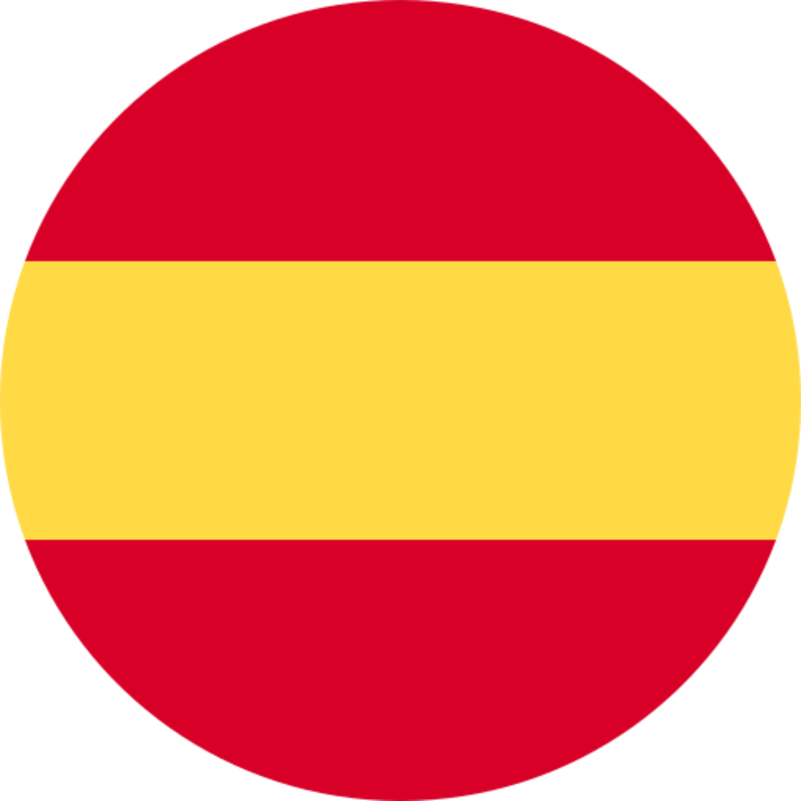
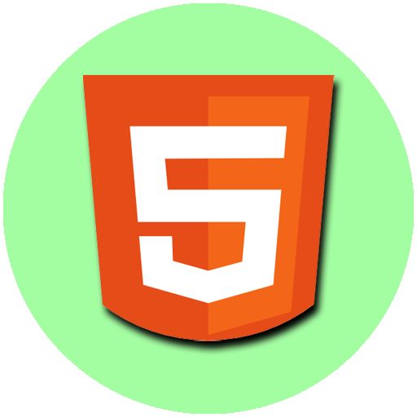
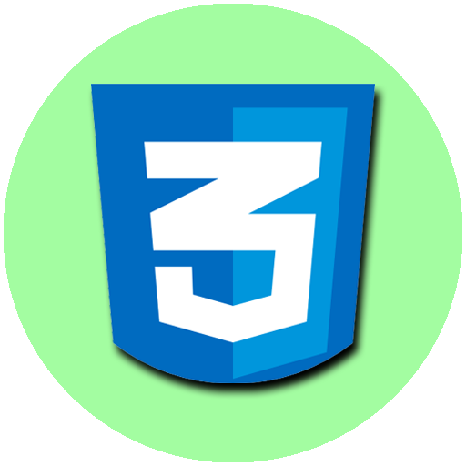
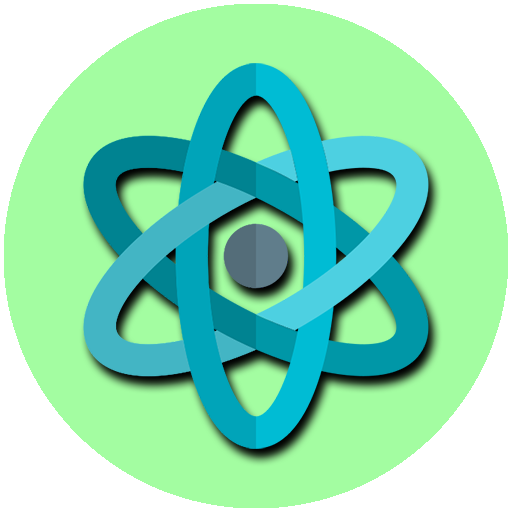
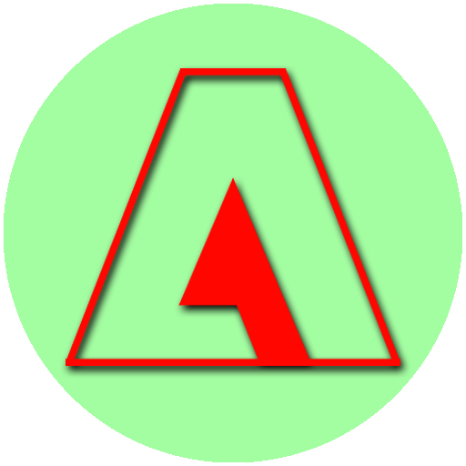

Gaston Saucedo
Diseñador y Desarrollador Web




Biografia
Soy un apasionado diseñador y desarrollador web, con gran afición por la fotografía y la producción de material audiovisual. Poseo gran capacidad de adaptación, carisma y creatividad, que me permiten ser un gran colaborador tanto en solitario como en equipo. Me considero una persona proactiva e inquieta, con una gran capacidad para crear composiciones atrevidas que impacten y dejen huella en el público. Considero que entender las necesidades de los clientes, escucharlos, comprenderlos y ayudarlos a realizar su vision el pilar fundamental de cada uno de mis trabajos.